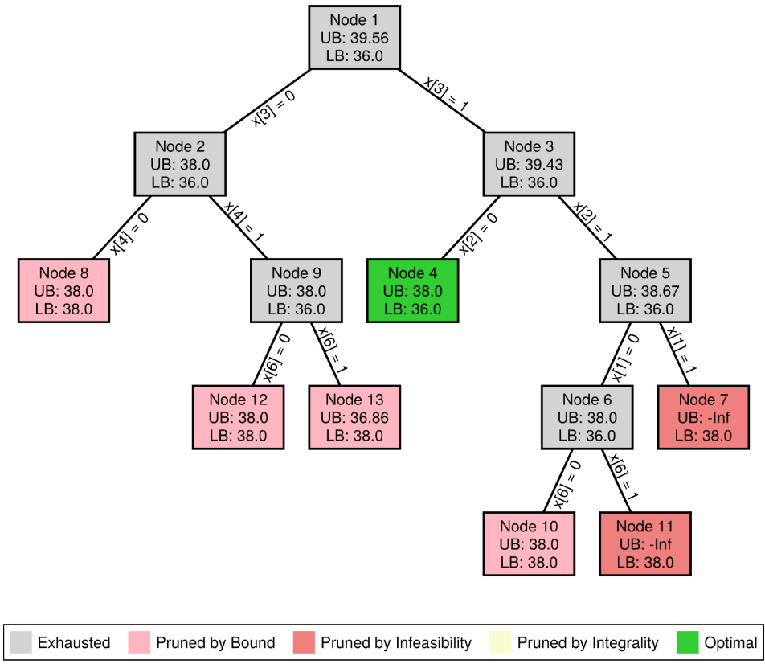

Introduction
BnB.jl provides a customizable branch-and-bound framework.
Installation
using Pkg
Pkg.add(url="https://github.com/Luiz-Lorena/BnB.jl")Quick Start
Consider the Binary Knapsack Problem (BKP) using Linear Programming relaxation in each node. The BKP instance is a small binary knapsack problem:
- each item has a value
v = [8, 16, 20, 12, 6, 10, 4] - each item has a weight
w = [3, 7, 9, 6, 3, 5, 2] - the knapsack capacity is
W = 17
The goal is to maximize total value without exceeding the capacity.
Step 1 - Load packages
The first step is to import the necessary packages.
using BnB # BnB Framework
using JuMP # Modeling language
using HiGHS # SolverStep 2 - Data structure for the problem
Create a problem data type inheriting from BnBData.
# Structure to represent the BKP data
struct BKPData <: BnB.BnBData
v::Vector{Int64} # values
w::Vector{Int64} # weights
W::Int64 # capacity
n::Int # number of items
# Constructor
function BKPData(;v::Vector{Int64}, w::Vector{Int64}, W::Int64)
return new(v, w, W, length(v))
end
endStep 3 - Create structure to represent branch constraints
For the BKP we branch by fixing variables.
# Structure to represent the branch constraint
struct FixVariable <: BnB.BnBBranchConstraint
i::Int64 # Variable index
value::Int64 # Value to fix
endStep 4 - Implement the required callbacks
a. Custom function to create incumbent solution
For the BKP we use a greedy heuristic based on value-to-weight ratio.
# Function to find an initial incumbent solution using a greedy heuristic based on value-to-weight ratio
function BnB.custom_incumbent(data::BKPData)
# Value-to-weight ratios
ratios = data.v ./ data.w
# Sort items by decreasing ratio
order = sortperm(ratios, rev=true)
# Initialize solution vector
solution = zeros(Int, data.n)
# Greedy filling based on sorted order
remaining_capacity = data.W
incumbent_objective = 0.0
for i in order
if data.w[i] <= remaining_capacity
solution[i] = 1
remaining_capacity -= data.w[i]
incumbent_objective += data.v[i]
end
end
return BnB.BnBSolution(solution=solution, objective=incumbent_objective)
endb. Custom function to solve the relaxation
We solve the LP relaxation of the BKP at each node adding constraints for the fixing variables.
# Function to solve the LP relaxation of the BKP for a given node
function BnB.custom_relaxation(node::BnB.BnBNode, bnb::BnB.BnBCore)
model = JuMP.Model(HiGHS.Optimizer)
JuMP.set_silent(model)
@variable(model, 0 <= x[i in 1:bnb.data.n] <= 1)
@objective(model, Max, sum(bnb.data.v[i] * x[i] for i in 1:bnb.data.n))
@constraint(model, sum(bnb.data.w[i] * x[i] for i in 1:bnb.data.n) <= bnb.data.W)
# Add constraints for fixed variables
for branch in node.branch_constraints
@constraint(model, x[branch.i] == branch.value)
end
JuMP.optimize!(model)
if JuMP.termination_status(model) == JuMP.OPTIMAL
return BnB.BnBSolution(solution=JuMP.value.(x), objective=JuMP.objective_value(model))
end
endc. Custom function to check pruning status
Function that checks the solution and returns the pruning status.
# Function to check pruning conditions for a given node and update its status accordingly
function BnB.custom_prune(node::BnB.BnBNode, bnb::BnB.BnBCore)
# 1. Prune by Infeasibility
if isnothing(node.relaxation.solution)
return BnB.PrunedByInfeasibility
end
# 2. Prune by Integrality
if !any(x -> 1e-5 < x < (1 - 1e-5), node.relaxation.solution)
return BnB.PrunedByIntegrality
end
# 3. Prune by Bound
if node.relaxation.objective <= bnb.incumbent.objective
return BnB.PrunedByBound
end
return BnB.Active
endd. Custom function to create the branches
We create branches by finding fractional variables of a solution.
# Function to select the branches and the values to fix for a given node
function BnB.custom_branch(node::BnB.BnBNode, bnb::BnB.BnBCore)
# Create two branches: one excluding the edge and one including the edge
branch_constraints = Vector{BnB.BnBBranchConstraint}()
# Find all fractional variables in the solution
fractional_variables = findall(x -> 1e-5 < x < (1 - 1e-5), node.relaxation.solution)
# Create branches
for var in fractional_variables
left_branch = FixVariable(var, 0)
right_branch = FixVariable(var, 1)
# Check if the variable is already fixed to 0.0 in the current node
if left_branch in node.branch_constraints || right_branch in node.branch_constraints
continue
end
push!(branch_constraints, left_branch) # Left branch: exclude the item
push!(branch_constraints, right_branch) # Right branch: include the item
return branch_constraints
end
ende. Custom function to check if the solution is optimal
Checks if the solution is valid, integral and is within a tolerance to be considered optimal.
# Function to determine if a node contains an optimal solution
function BnB.custom_is_optimal_solution(node::BnB.BnBNode, bnb::BnB.BnBCore)
# Check if the node has a valid solution
if isnothing(node.relaxation.solution)
return false
end
# Check if the solution is integral (i.e., all variables are either 0 or 1)
is_integral = !any(x -> 1e-5 < x < (1 - 1e-5), node.relaxation.solution)
# Check if the relaxation value matches the best incumbent objective value within a tolerance
is_optimal = isapprox(node.relaxation.objective, bnb.incumbent.objective; atol=1e-6)
# It is optimal if it has an integral solution and its relaxation value matches the incumbent objective value
if is_integral && is_optimal
return true
end
return false
endStep 5 - Solve
a. Load problem data
We create an instance of the problem structure.
# Example
data = BKPData(
v = [8, 16, 20, 12, 6, 10, 4],
w = [3, 7, 9, 6, 3, 5, 2],
W = 17
)b. Customize the plot options
Define plot options for the Branch-and-Bound tree figure. The branch_label option, for instance, defines the edge's label.
# Define plot options for this example
custom_plot_options = BnB.BnBPlotOptions(
figure_size = (750, 650),
node_size = (130, 90),
node_label_size = 14,
edge_label_size = 14,
show_legend = true,
legend_position = :bottom,
branch_label = (branch::FixVariable) -> "x[$(branch.i)] = $(branch.value)"
)c. Call the solve
The last step is to call the solve function to execute the Branch-and-Bound algorithm. Defining the problem as maximization, the search strategy, and the plot options.
# Solve the BKP using the BnB framework
solution = BnB.solve(data, is_maximization = true, search_strategy = :best_bound, custom_plot_options = custom_plot_options)Results
The solve function will provide the best solution found, display a summary of the Branch-and-Bound process, and a figure representing the BnB tree.
========== Branch-and-Bound Completed ==========
Total time: 0.04331803321838379 seconds
Best solution: [1.0, -0.0, 1.0, 0.0, 0.0, 1.0, -0.0]
Objective value: 38.0
Nodes explored: 13
Nodes pruned: 6
Pruning statistics:
- Pruned by infeasibility: 2
- Pruned by integrality: 0
- Pruned by bound: 4
=================================================
Search Tree
=================================================
└── Node 1 (39.56)
├── Node 2 (38.0)
│ ├── Node 8 (38.0) ✂️
│ └── Node 9 (38.0)
│ ├── Node 12 (38.0) ✂️
│ └── Node 13 (36.86) ✂️
└── Node 3 (39.43)
├── Node 4 (38.0) ⭐
└── Node 5 (38.67)
├── Node 6 (38.0)
│ ├── Node 10 (38.0) ✂️
│ └── Node 11 (-Inf) 🚫
└── Node 7 (-Inf) 🚫
Legend:
🔒 : Pruned by Integrality
🚫 : Pruned by Infeasibility
✂️ : Pruned by Bound
⭐ : Optimal
=================================================
For other examples see Examples.